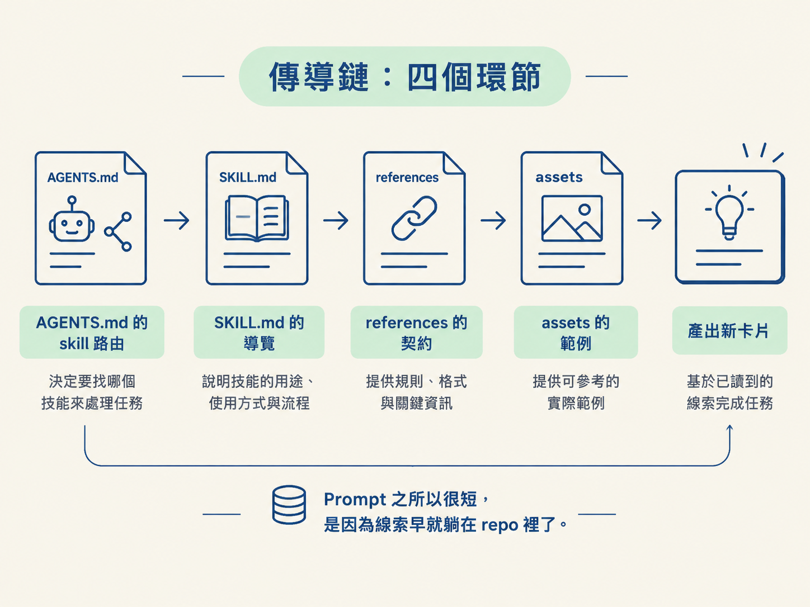
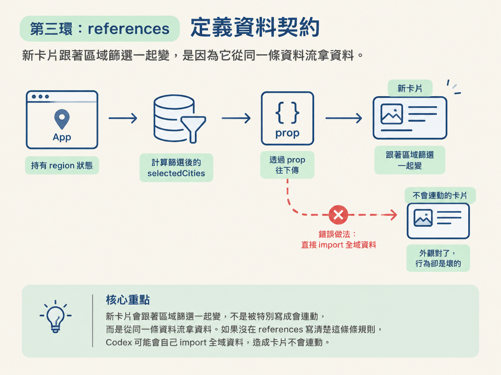
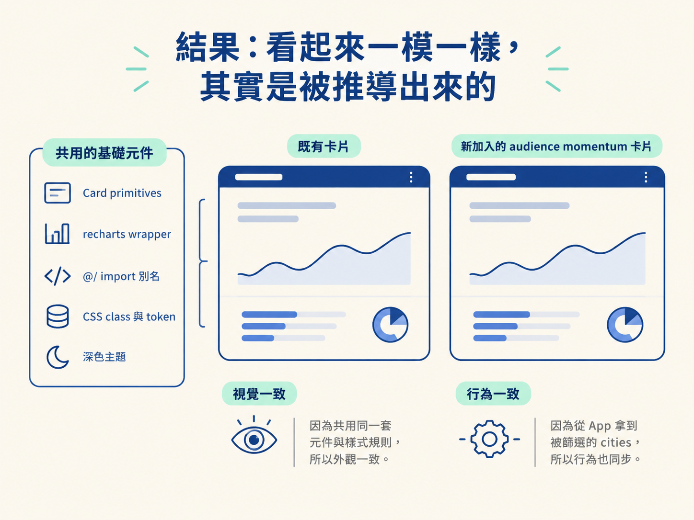

能說出功能自動貼合既有 dashboard 的傳導鏈：AGENTS.md 路由到 skill、skill 指向範例元件與資料契約，於是 Codex 重用既有 primitives 並保留 region filter。
上一節的結尾是這樣的畫面：你送出一段只描述結果的 prompt，Codex 跑了十分鐘，新的「Where activity is changing」區塊出現在畫面上。它長得跟旁邊其他卡片一模一樣，當你點下區域篩選，這張新卡片也跟著一起變。
問題來了：你回頭看那段 prompt，裡面完全沒提到設計系統、沒提到圖表套件，也沒提到「要跟篩選連動」以外的任何實作細節。那這一切是怎麼發生的？
如果只看 prompt，答案會是「什麼都沒發生」，因為真正的答案不在 prompt 裡，而在 repo 裡。這一節要拆的就是這條從 repo 傳導到畫面的鏈。看懂它，你就會明白前面強調的「把知識寫進 repo」不是口號，而是會直接決定輸出品質的機制。
整條鏈可以簡化成四段，每一段都把上一段的線索交棒給下一段：
| 環節 | 它做的事 |
|---|---|
| AGENTS.md 的 skill 路由 | 辨認出「這是新增 dashboard 卡片的工作」，指向對應的 skill |
| SKILL.md 的導覽 | 告訴 Codex 先讀哪些既有檔案，再決定怎麼實作 |
| references 的契約 | 提供元件、資料、圖表、樣式與版面可沿用的實際規範 |
| assets 的範例 | 給一份可改寫的實作起點，而不是要求照抄 |
下面把每一環攤開來看。你會發現 prompt 之所以能那麼短，是因為這些內容早就躺在 repo 裡等著被讀到。

Codex 進到 repo 後，會讀最接近的那份 AGENTS.md。這份檔案裡有一段專門在做路由，把不同種類的工作連到不同的 skill：
## Choose the matching skill
- For a new dashboard card, analytics panel, chart, engagement metric, regional breakdown, table, or compact insight, read and follow `skills/blossomview-card-builder/SKILL.md`.
- Use the skill's `references/dashboard-card-patterns.md` for the existing component, data, chart, styling, and layout contracts.
- Use `assets/active-engagement-card.tsx` only as an adaptable implementation asset, not as a requirement to add that exact card.
- Keep implementation detail in the skill. Do not duplicate its full workflow here.注意它的寫法：只講「什麼工作 → 去讀哪個 skill」，而且最後一句明白要求「實作細節留在 skill 裡，不要在 AGENTS.md 重複」。這是一個刻意的分層，就像公司裡的櫃台只負責指路，不會把整棟樓的平面圖貼在櫃台上。
你的 prompt 提到「新增一個區塊」，剛好落在「dashboard card、analytics panel」這一類，於是 Codex 被導向 blossomview-card-builder。
進到 skill 之後，第一件事不是挑元件，而是照著順序讀一批既有檔案：
## Start with the existing system
1. Read `src/App.tsx` to locate the existing dashboard state and the two card placement options.
2. Read `src/components/ui/card.tsx` and reuse `Card`, `CardHeader`, `CardTitle`, `CardDescription`, and `CardContent`.
3. Read `src/components/audience-chart.tsx` and `src/components/geographic-table.tsx` for full-size analytics cards, or `src/components/insights-rail.tsx` for a compact sidebar section.
4. Read `src/data/insights.ts` and `src/lib/utils.ts`. Derive metrics from the existing `UserCity[]`, `getCountryTotals`, `getGrowthData`, `compactNumber`, and `preciseNumber`.
5. Read the relevant `.analytics-*`, `.rail-*`, and breakpoint rules in `src/index.css`.這份清單本身就是「怎麼做」的答案：先看狀態放在哪、再看要重用的 Card primitives、然後看完整卡片的範例、接著看資料 helper、最後看樣式與斷點。Codex 不必憑空猜這個 repo 的慣例，它只要照著清單走。
這裡也順便示範了 skill 的設計原則：SKILL.md 只當導覽，把大量細節推到 references/ 與 assets/。原因很現實：一旦 Codex 判定要載入某個 skill，它就會讀 SKILL.md；如果連同所有深度內容都塞在裡面，context 一載入就被撐爆。分層之後，Codex 只在真的需要時才去取更深的那一層，像書裡的章節摘要帶你到書架前，再自己抽出該翻的那一本。
真正讓「篩選會自動連動」成立的地方，在 references/dashboard-card-patterns.md。它把資料怎麼流動講得清清楚楚：狀態的擁有者是 App，被篩選過的城市清單由它算出來，再當成 prop 往下傳。
const [region, setRegion] = useState<Region>("Everywhere");
const selectedCities = useMemo(() => getCities(region), [region]);而新的卡片要接受的是這份「已經篩選過」的清單：
<ActiveEngagementCard cities={selectedCities} />契約裡還有一條硬規則：卡片要吃的是從 App 傳下來、被 region 篩選過的 cities，絕對不可以自己去 import 那份未篩選的全域資料。
就是這一條，解釋了為什麼新卡片會跟著區域篩選一起變。它不是「被特別寫成會連動」，而是從一開始就被要求從同一條資料流拿資料。如果這條規則沒被寫進 references，Codex 很可能就自己 import 全域資料，做出一個不會連動的卡片，外觀對了，行為卻是壞的。

同一個 references 也把圖表的寫法講死：只能用已安裝的 recharts 與本地的 chart wrapper，並沿用既有的 CSS token 與 class。
最後一環是 assets/active-engagement-card.tsx。AGENTS.md 對它的定位說得很精準：它是一份「可以改寫的實作素材」，而不是「照抄這個卡片」的規定。
這樣的措辭避開了一個常見的陷阱。把它當成模板硬套，Codex 就會做出一個跟需求無關的 active engagement 卡片；把它當起點，Codex 就會沿用結構、再換成 audience momentum 的內容。範例是給手感的樣品，不是蓋章的規格。
把四環接起來看，你就得到一開始那個畫面了。新卡片用了既有的 Card primitives、既有的 recharts wrapper、@/ 的 import 別名，以及既有的 CSS class 與 token，所以視覺上跟其他卡片同一套；它從 App 拿到被篩選的 cities，所以行為上也跟其他卡片同步。

這不是 Codex「猜對」了，而是每一項決定都被 repo 的規則推導出來。
這也回頭印證了上一節為什麼要講探索：如果 repo 沒有這些檔案，Codex 探索時就找不到線索，只好自己發明。功能會不會「貼合」，其實在你寫 prompt 之前就由 repo 決定了。
功能能自動貼合既有 dashboard，靠的是一條 repo 內的傳導鏈：AGENTS.md 把工作路由到對應 skill，SKILL.md導覽 Codex 先讀哪些既有檔案，references/定義元件與資料契約（包括「只吃被篩選過的 cities」），assets/提供可改寫的起點。Codex 沿著這些規則重用既有 primitives 與資料流，於是新卡片在視覺與行為上都跟其他卡片一致。prompt 之所以能那麼短，是因為怎麼做早就被寫進 repo 了。
把這條鏈記成一句話：repo 管「怎麼做」，prompt 只管「要什麼」。機制看懂了，下一個問題就變成「那我要給多少指引」：既然 repo 會提供做法，是不是永遠都只說要什麼就好？下一節會給你一個判準，讓你決定 prompt 該停在多高的層次。